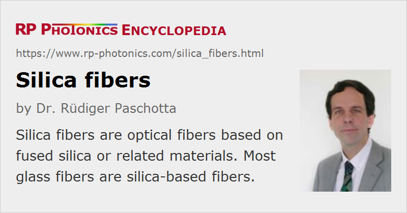

Silica Fibers
Definition: optical fibers based on fused silica or related materials
More general term: optical fibers
German: Quarzglasfasern
Categories: optical materials, fiber optics and waveguides
How to cite the article; suggest additional literature
Author: Dr. Rüdiger Paschotta
Optical fibers are long and flexible kinds of optical waveguides. They are essentially always based either on some glass or on polymers (plastic optical fibers). Among the glasses, fused silica (amorphous silicon dioxide, SiO2) is the dominating material in fiber optics (particularly for optical fiber communications, → telecom fibers), because it has a number of very favorable properties:
- Silica has a wide wavelength range with good optical transparency. In the near-infrared spectral region, particularly around 1.5 μm wavelength, silica can have extremely low absorption and scattering losses of the order of 0.2 dB/km (see Figure 1), when the fiber preform is fabricated in very pure form with certain methods (→ fiber fabrication). Whereas a high transparency in the 1.4-μm region is achieved by keeping the concentration of hydroxyl groups (OH) low, a high OH concentration is better for good transparency in the ultraviolet region. For wavelength from ≈1.8 μm on, the multiphonon absorption leads to steeply rising absorption (infrared absorption edge).
- Silica can be drawn into fibers at reasonably high temperatures, and has a conveniently broad glass transition (a relatively shallow viscosity curve).
- Cleaving and fusion splicing of silica fibers works fairly well.
- A silica fiber has an amazingly high mechanical strength against pulling and even bending, provided that the fiber is not too thick and that the surfaces are well prepared. The mechanical strength of a fiber can be further improved with a suitable polymer jacket. Even simple cleaving (breaking) of silica fiber ends can provide nicely flat surfaces with sufficient optical quality.
- Silica is chemically very stable. In particular, it is not hygroscopic.
- Silica glass can be doped with various materials. One purpose of doping can be to raise the refractive index (e.g. with GeO2 or Al2O3) or to lower it (e.g. with fluorine or B2O3). Doping is also possible with laser-active ions (→ rare-earth-doped fibers) in order to obtain active fibers, to be used e.g. in fiber amplifiers or fiber lasers. The fiber core and sometimes the fiber cladding are doped, so that the material is effectively e.g. an aluminosilicate, germanosilicate, phosphosilicate or borosilicate glass. Particularly for active fibers, pure silica is usually not a very suitable host glass, because it exhibits a low solubility for rare earth ions. This leads to quenching effects due to clustering of dopant ions, even for moderate doping concentrations. Aluminosilicates are much better in this respect.
- Silica has a high damage threshold, i.e., a low tendency for phenomena such as laser-induced breakdown. This is important for, e.g., fiber amplifiers when applied for the amplification of short pulses.
- Silica has a particularly low Kerr nonlinearity, which is beneficial in many cases where nonlinear effects can be detrimental. Nevertheless, silica can be quite suitable for exploiting the Kerr effect since the ratio of χ(3) and the absorption coefficient is rather large (particularly for wavelengths around 1.5 μm) due to the very weak absorption: the weak nonlinearity can be used over a long length.
Silica fibers dominate many applications, such as optical fiber communications (except for very short distances with plastic optical fiber), most fiber lasers and amplifiers, and fiber-optic sensors. The large efforts which have been invested in the development of various kinds of silica fibers have further increased the performance advantages of such fibers over fibers based on other materials (see below).
There are also pure silica fibers in the form of photonic crystal fibers, containing tiny air holes. Here, the guidance (waveguide function) is achieved either by a reduced effective index of the cladding (caused by a larger fraction of air) or by a photonic bandgap effect.
For special applications, certain non-silica fibers are required:
- Phosphate glass fibers can be advantageous when a high doping concentration of rare earth ions is required.
- Fluoride fibers containing heavy metals can be used for the transmission of mid-infrared light, and for fiber lasers or amplifiers where low-energy laser transitions with long metastable level lifetimes are required.
- Plastic optical fibers (polymer fibers) can be cheaper and thicker than silica fibers and are used e.g. for illumination purposes and for short-range data transmission.
Suppliers
The RP Photonics Buyer's Guide contains 10 suppliers for silica fibers.
Questions and Comments from Users
Here you can submit questions and comments. As far as they get accepted by the author, they will appear above this paragraph together with the author’s answer. The author will decide on acceptance based on certain criteria. Essentially, the issue must be of sufficiently broad interest.
Please do not enter personal data here; we would otherwise delete it soon. (See also our privacy declaration.) If you wish to receive personal feedback or consultancy from the author, please contact him e.g. via e-mail.
By submitting the information, you give your consent to the potential publication of your inputs on our website according to our rules. (If you later retract your consent, we will delete those inputs.) As your inputs are first reviewed by the author, they may be published with some delay.
Bibliography
| [1] | W. A. Gambling, “The rise and rise of optical fibers”, J. Sel. Top. Quantum Electron. 6 (6), 1084 (2000), doi:10.1109/2944.902157 |
See also: fibers, telecom fibers, rare-earth-doped fibers, fiber optics, photodarkening, photonic crystal fibers, optical fiber communications, fluoride fibers
and other articles in the categories optical materials, fiber optics and waveguides
|  |
If you like this page, please share the link with your friends and colleagues, e.g. via social media: 


These sharing buttons are implemented in a privacy-friendly way! |
2020-07-03
How much SiO2 is present in the glass which is drawn into fibers?
Answer from the author:
They mostly consist of silica – even in the core region, e.g. if it is germanosilicate: usually, only a few percent of germania are added.